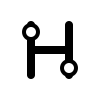
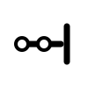
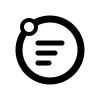

Key Route
Geometry + line
键帽轮廓包住一条转弯的地铁线路；两个站点兼作输入的起点和终点。结构最少，在 16px 下最稳定。
Favicon design exploration · 2026
键帽轮廓包住一条转弯的地铁线路；两个站点兼作输入的起点和终点。结构最少，在 16px 下最稳定。

将 Hangzhou 的 H 重构为两条平行轨道与换乘通道，城市首字母更突出。

地铁线延伸到输入光标，直接表达“沿线路打字前进”。
九枚键帽构成输入矩阵，斜向线路让静态网格产生移动感。

环线包围逐渐变短的文本行，把“线路”与“文字练习”合并为一个闭环。
列车正面和输入光标并置，含义最直白，也更具游戏感。